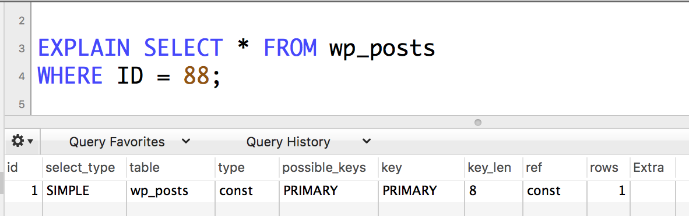

Things you didn't know you need to know about WordPress and databases
crash course into database architecture
slides: wcbtn.j7y.co/
Gabor Javorszky
- freelancer, work with clients on WooCommerce / Subscriptions / performance problems
- blog on javorszky.co.uk
- twitter in bottom left corner
Assumptions
- Site is large with lots of data
- with WooCommerce
- You are a developer / have seen the WP database before
common (slow) queries
get me all the orders for user 4
get me all subscriptions where the next payment date is between X and Y
get me all orders where the total is $19.92
get me the sum of all order totals where the order date is in May and order by order total. or date
basically doing anything on the admin area
All of those are going to be
...really...
...slow.
The Talk
- Part I: indexes and how to use them (SELECT / ORDER BY / GROUP BY index usage)
- Part II: storing data in multiple tables vs one table - foreign keys and why they're awesome
- Part III: tools to measure stuff
Part I: Indexes
What are they?
Why are they important?
How do they work? üåàüåà
What are indexes
 j zamora
j zamora
 Sanwal Deen
Sanwal Deen
| By author | By book | By author-book |
|---|---|---|
| George Orwell - pos 832:021 | George Orwell: Animal Farm - pos 832:021 | Animal Farm - pos 832:021 |
| Isaac Asimov - pos 432:333 | Isaac Asimov: Foundation - pos 531:214 | Foundation - pos 432:333 |
| Isaac Asimov - pos 531:214 | Isaac Asimov: The Naked Sun - pos 432:333 | The Handmaid's Tale - pos 111:209 |
| Margaret Atwood - pos 111:209 | Margaret Atwood: The Handmaid's Tale - pos 111:209 | The Naked Sun - pos 531:214 |
Why are they important?
üëå designed indexes ➡
fast, efficient data access ➡
üíØ site ➡
üòç customers ➡
üí∞üíµ
Unique / multi index
UNIQUE: one value can only appear once in a column. Super fast
Example: post IDs
MULTI: same value can repeat. Still fast, though additional filtering required.
Example: postmeta_key
NULL values in indexes
tldr; if data in column shouldn't ever be NULL, declare it so. Data lookup will be faster.
CREATE TABLE `wp_posts` (
`ID` bigint(20) unsigned NOT NULL AUTO_INCREMENT,
...
)
protip: primary keys will always be NOT NULL!
protip2: unique keys permit multiple NULL values!
Compound indexes
-- given these columns
-- ID, post_name, post_date
CREATE INDEX (`ID`, `post_name`, `post_date`)
-- will result in a compound index across ID, post_name, post_date, in that order
“If the table has a multiple-column index, any leftmost prefix of the index can be used by the optimizer to look up rows.”
SELECT * FROM table WHERE `ID` = x, `post_name` = y -- uses index (1,2)
SELECT * FROM table WHERE `ID` = x -- uses index (1)
SELECT * FROM table WHERE `ID` = x, `post_date` = z -- NOT using index (1,3)
SELECT * FROM table WHERE `post_name` = y, `post_date` = z -- NOT using index (2,3)
SELECT * FROM table WHERE `post_name` = y -- NOT using index (2)
Columns, data types
- numeric: INTEGER, BIGINT, SIGNED / UNSIGNED
- string: TEXT, VARCHAR, LONGTEXT
- date type: DATE, TIMESTAMP, DATETIME
- specifying character lengths: VARCHAR(191), BIGINT(20)
Examples of signed / unsigned. "Can it have a negative sign?". Highest binary place is the sign
// signed -127 – +127
011111111 = +127
111111111 = -128
// unsigned 0 – 255
011111111 = 127
111111111 = 255


MariaDB [dev.dev]> show columns from wp_posts;
+-----------------------+---------------------+------+-----+---------------------+----------------+
| Field | Type | Null | Key | Default | Extra |
+-----------------------+---------------------+------+-----+---------------------+----------------+
| ID | bigint(20) unsigned | NO | PRI | NULL | auto_increment |
| post_author | bigint(20) unsigned | NO | MUL | 0 | |
| post_date | datetime | NO | | 0000-00-00 00:00:00 | |
| post_date_gmt | datetime | NO | | 0000-00-00 00:00:00 | |
| post_content | longtext | NO | | NULL | |
| post_title | text | NO | | NULL | |
| post_excerpt | text | NO | | NULL | |
| post_status | varchar(20) | NO | | publish | |
| comment_status | varchar(20) | NO | | open | |
| ping_status | varchar(20) | NO | | open | |
| post_password | varchar(255) | NO | | | |
| post_name | varchar(200) | NO | MUL | | |
| to_ping | text | NO | | NULL | |
| pinged | text | NO | | NULL | |
| post_modified | datetime | NO | | 0000-00-00 00:00:00 | |
| post_modified_gmt | datetime | NO | | 0000-00-00 00:00:00 | |
| post_content_filtered | longtext | NO | | NULL | |
| post_parent | bigint(20) unsigned | NO | MUL | 0 | |
| guid | varchar(255) | NO | | | |
| menu_order | int(11) | NO | | 0 | |
| post_type | varchar(20) | NO | MUL | post | |
| post_mime_type | varchar(100) | NO | | | |
| comment_count | bigint(20) | NO | | 0 | |
+-----------------------+---------------------+------+-----+---------------------+----------------+
23 rows in set (0.00 sec)


191? - Limit is 767 bytes. utf8mb4 charset => 767 / 4 = 191.75 => 191. Only 191 characters fit into the key prefix.
EXPLAIN SELECT
(post_type, post_status, post_date, ID)

(post_type, post_status, post_date, ID)

(post_type, post_status, post_date, ID)
(post_type, post_status, post_date, ID)

(post_type, post_status, post_date, ID)

(post_type, post_status, post_date, ID)
ID (PRIMARY)

(post_type, post_status, post_date, ID)
ID (PRIMARY)


Using WP_Query
By the way the previous is why WP Query forces you to declare a post_type, otherwise defaults to post.
// in class-wp-query.php line 2281 in version 4.8.1
// method get_posts()
} else {
$where .= " AND {$wpdb->posts}.post_type = 'post'";
$post_type_object = get_post_type_object ( 'post' );
}
If there was no post_type declaration, lots of queries would skip using the index.
ORDER BY
Think carefully what to use for order by. The full list is on MySQL docs on ORDER BY optimization.
- The larger the data to order, the slower it'll be.
- Indexes can be used to order by if "if the ORDER BY does not match the index exactly, as long as all unused portions of the index and all extra ORDER BY columns are constants in the WHERE clause."
These will use index:
-- same compound key, consecutive, no WHERE clause
SELECT * FROM t1
ORDER BY key_part1, key_part2;
-- key_part1 in WHERE with constant (not column), key_part2 in order by
SELECT * FROM t1
WHERE key_part1 = constant
ORDER BY key_part2;
-- key_part1 is compared to constant, same key used in order by
SELECT * FROM t1
WHERE key_part1 > constant
ORDER BY key_part1 ASC;
-- key parts compared to constants, order by uses same key part
SELECT * FROM t1
WHERE key_part1 = constant1 AND key_part2 > constant2
ORDER BY key_part2;
These will not use index though:
-- Query uses two different indexes
SELECT * FROM t1 ORDER BY key1, key2;
-- non-consecutive compound index parts in order by
SELECT * FROM t1 WHERE key2=constant ORDER BY key_part1, key_part3;
-- mixes ASC and DESC
SELECT * FROM t1 ORDER BY key_part1 DESC, key_part2 ASC;
-- key in WHERE and key in ORDER BY are different
SELECT * FROM t1 WHERE key2=constant ORDER BY key1;
-- order by is an expression other than the index (needs calculation)
SELECT * FROM t1 ORDER BY ABS(key);
SELECT * FROM t1 ORDER BY -key;
GROUP BY
Temporary table / uses indexes in VERY SPECIFIC cases. Douglas Adam's words apply to Group By too:
The Encyclopedia Galactica, in its chapter on Love states that it is far too complicated to define. The Hitchhiker's Guide to the Galaxy has this to say on the subject of love: Avoid, if at all possible. Unfortunately, Arthur Dent has never read the Hitchhiker's Guide to the Galaxy.
JOINS
Data that requires multiple tables to fetch. Eg:
- All posts that belong to the category "blog"
- Orders where the billing country is the US
- Posts where admin is the user
Part II: new table / same table and foreign keys
same table / new rel table?
Hypothetical WooCommerce Orders new table structure
- required, only one per order? => Same table, new column! eg order total
- optional, only one per order? => Same table, allow NULL
- required, multiple per order? => new rigid table, eg list of coupons, list of line items
- optional, arbitrary? => general table, key-value pair, like postmeta
deleting records
delete things from wp_posts
then need to clean up in wp_postmeta
... and terms
... and comments
... and taxonomy relationships...
The solution is (would be)
Foreign keys!!
Foreign Keys
constraints on the database to keep data consistent
CREATE TABLE parent (
id INT NOT NULL,
PRIMARY KEY (id)
) ENGINE=INNODB;
CREATE TABLE child (
id INT,
parent_id INT,
INDEX par_ind (parent_id),
FOREIGN KEY (parent_id)
REFERENCES parent(id)
ON DELETE CASCADE
) ENGINE=INNODB;
Foreign Keys
You can't insert data that doesn't belong to something that already exists in the main table.
Can't drop table that has other tables depending on it.
Foreign Keys
ON DELETE CASCADEif I delete the main record in parent, everything else that had its foreign key constrained to THAT id will automatically be deleted with it. Automatic cleanup! No more hunting for orphan data!
Of course it's not implemented in WordPress, mostly due to backwards compat reasons. (Trac 19207)
Part III: tools
- NewRelic APM configured to give you slow queries
- MySQL Workbench / Sequel Pro / mysql cli for the EXPLAIN queries. Please don't use phpmyadmin for this even though it COULD.
- Blackfire.io


Tips
- Don't change WP schema
- rethink code so it uses indexes
- rethink your own schemas to not waste resources
- learn more about MySQL. Their documentation is A++ 5/7 would recommend
- use profiling tools to find where the bottlenecks are
- you can always hire someone who knows how to database
Super Advanced Tip
- If the query is REALLY gnarly, create a table / temporary table, from a bunch of data from a LOT of tables without caring about order by or group by. There you can have it indexed too. And THEN you can do your data filtering on that table.
- Two fast queries are better than one reeaaaalllyyy slow.
- Example in an article I wrote: How I improved a query for our plugin by several orders of magnitude
終わり
(owari – the end)
Questions?
@javorszky
btw slides on j7y.co/wcbtn